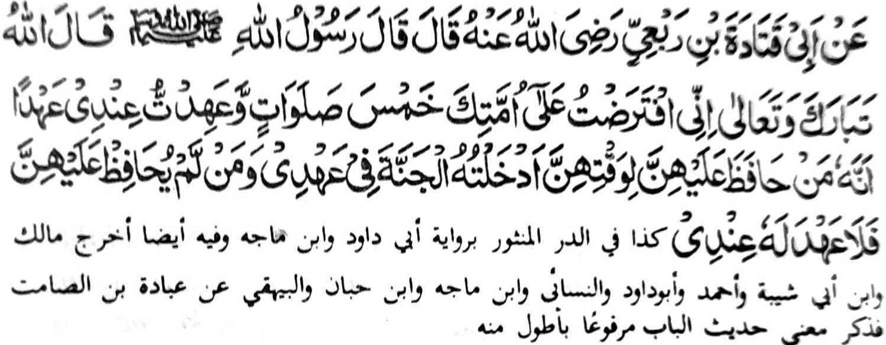

Miyaka thitayan si-i ko Abu Qatadah Bin Rabi’ (Radhiallaho 'Anho) a pitharo iyan a pitharo o Rasulollah (Sallallaho Alaihi Wasallam), "Pitharo o Allah a Maporo ago Mala: 'Mata-an a Saken na inipaliyogat aKen ko manga Ummat ka so lima a Sambayang go inibegay aKen a diyandi so pasad a mata-an a sekaniyan a tao a siyapen niyan siran (a manga sambayang) si-i ko manga Wakto iran na phakasoleden Ko ko Sorga si-I ko diyandi Aken. Sa peman sa tao a di niyan siran siyapen na dako siran peda sangka-iya kapasadan a diyandi Aken.'"
Si-i ko salakao a Hadith, na miya-aloy ron a so Allah na inipaliyogat Iyan so lima a Sambayang na saden sa somiyap ko Sambayang iyan, lagid o kapagadbas phiya-piya ago zambayang ko manga miyapento a Wakto niyan a Ikhlas ago phipiya-piya-an, na tiyangkedon o Allah ko kaphakasoled iyan sa Sorga; go so tao a di niyan siyapen so Sambayang iyan, na da a kasarigan a bagi-an niyan; khapakay a karila-an sekaniyan antawa ka di. So Sambayang na tanto a mala i arga. Khibegay niyan reketa so okit ko kakowa-a ko kasarigan o Allah ko kapakasoled sa Sorga. lgira aden a barabantoga a manosia a mala-i tamok odi na mala-i kadato a bigan ta niyan sa kasarigan odi na pagogupan ta niyan ko kakowa-a ta ko saba-ad a singanin ta sa Donya, na tanto ta a pekhaso-at go pekhababaya ago inibetad ta sa atas tanggongan ta so kapezo-a-soat ta taon. Si-i na soden so Allah a maporo a Datu ko dowa inged (donya ago Akhirat) i mabebegay sa kasarigan ago katatangked o kapakaselang sa maliwanag ko oriyan o kapatay a balas o lima a sambayang ko oman gawi-i, a da a mala a kakhalogat taon. Open o di tano si-i mamakot na daden a khasenditan tano inonta so manga ginawa tano pho-on ko piyakaleklek a khaola-ola a nomanayao reketano.